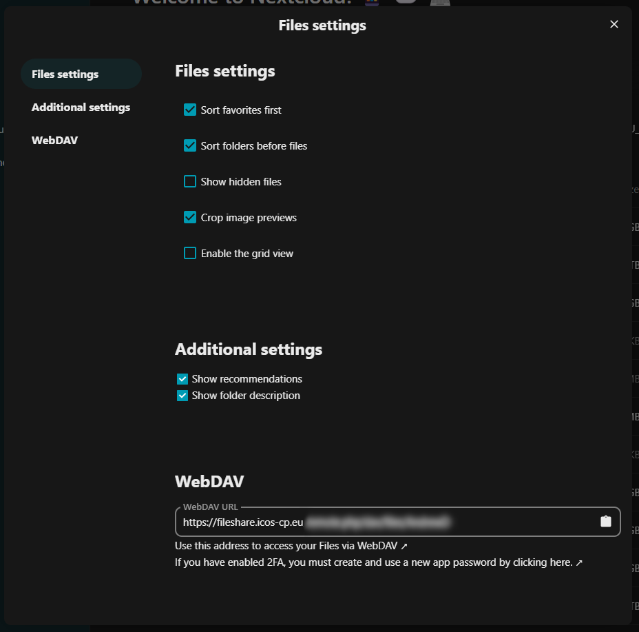

Advanced functions
Accessing fileshare data through WebDAV
You can access your Fileshare data using your WebDAV address. Within the Files app, click on the Files settings link in the bottom left corner of the screen, within the App information section. In the Files settings window, you can view the WebDAV address of the Fileshare server. You can use this address to link your local computer to the Fileshare server and have the Fileshare data linked as a local drive or folder. Depending on your operating system, this is either an easy (MacOS, Linux) or frustrating task (Windows).

Syncing Fileshare data with your local computer or mobile phone
Nextcloud provide a set of apps that allows you to sync your Fileshare drive to a local folder on your computer, or to access files/folders from your mobile phone. Desktop apps exists for MacOS, Linux and Windows, and mobile apps for Android and iOS. After installation, you can select which folders and files need to be synchronised.
To download the apps, you can visit either:
Accessing data from another cloud server
You can also connect to other cloud storage services, for example, other Nextcloud servers, Owncloud servers or even sftp and other WebDAV services from the External storage settings.
If you have any questions about our ICOS services or feedback regarding our documentation, you can email our User Support team at help@icos-ri.eu.